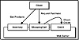

|
|
 |

|
Developing Java Enterprise Applications
by Stephen Asbury ; Scott R. Weiner
Wiley Computer Publishing, John Wiley & Sons, Inc.
ISBN: 0471327565 Pub Date: 02/01/99

|
Designing Servlets
Perhaps one of the hardest decisions to make when using servlets, or any other Web server application, is how to break the program into logical pieces. In the case of a Web-based program, these logical pieces are often associated with Web pages. When creating a Web application with several Web pages, the first step is to determine what types of pages will be displayed. For example, in an online catalog, there might be pages that list available items and pages that display item details. There may be numerous versions of each type; there are certainly many different items that have details, and those items may be categorized into separate lists.
Given the types of pages you need, ask yourself: Is the data on this type of page dynamic? If it is, the next question is, how dynamic? Does the data change for every request, or just once in a while? For example, the pages at amazon.com are personalized for each registered visitor. This means that the Amazon site has to update the page for each request. On the other hand, an online magazine might add stories daily, but once added, the stories aren’t changed for each request. In between these two examples is a Web page that shows data from a database changing hourly. In this case, all users within a given hour see the same page.
For truly dynamic pages, assign a servlet to them. If a page is simply added on a regular basis, just add HTML pages to the site. For pages that change regularly but for which all users see the same version, you have two choices. First, you could use a servlet. This requires the data to be created for each request, or possibly cached in memory. Second, you could have a servlet or another program update the HTML files on disk. This method maximizes the performance of each request and still allows pages to change dynamically.
The bottom line is that you want to use servlets only for pages that change with each request. A great example of this is the search servlet described in Chapter 8, “A Servlet-Based Search Engine.” Each search is unique and needs to be handled individually.
Servlets should be assigned by page type and not by individual page. Unless your site has only one page type, you may use numerous servlets to build the site. By specializing the servlets, you minimize the amount or work each one has to do to fulfill a request. Figure 7.8 shows an example of a servlet-based Web application that has been broken up using this philosophy.
The other kind of servlet you might need to write is one that handles the server-side portion of an applet/servlet pair, or a servlet that provides server code to another type of program, such as a Java application. Again, try to minimize the work each servlet does to respond to a request, or at least organize the code to handle the request in a way that makes it easy to maintain. For example, have the service method call other methods based on the client request in the same way that an HttpServlet calls doGet for GET requests and doPost for POST requests. You might even put the code for handling each request type in another class to minimize the size of the servlet code, making it more readable. Testing the servlet and finding errors or performance bottlenecks will also be easier.
There are a number of simple rules you can follow to improve the design and security of your servlets beyond what Java already provides.

Figure 7.8 Example of servlet application.
- 1. Double-check any assumptions you make about the user input. Many of the security risks that can occur are the result of faulty assumptions about input. These include the content or the amount of input.
- 2. Be careful and check that you are not allocating too much memory. In particular, watch out when you are reading data, and don’t read an arbitrary amount. Use limits. A hacker could make a POST request with a CONTENT_LENGTH that is outrageously large. This might cause you script problems.
- 3. Don’t assume that the data sent to your script is valid. Check the data first to make sure that it can be used the way you plan to use it. For example, make sure that an int is really an int or use try-catch blocks to handle any exceptions thrown when trying to parse data.
- 4. Don’t assume that all the form elements were filled in. The user may not fill in any or all of the form elements. You might want to check that required elements exist; if they do not, send the user a page that explains the missing fields and provides him or her with a link back to the form.
- 5. Don’t assume that the key-value pairs sent to your script necessarily correspond to actual form elements. A cracker could generate a false request with other fields.
- 6. Don’t return an arbitrary file to the client.
- 7. Don’t assume that path information sent to your script describes a real file. The path sent to a script may not describe a valid file path.
- 8. Don’t assume that path information sent to a script is safe. A cracker could send the path to a file that you don’t want him or her to see, such as /etc/passwd. One of the authors once mailed a programmer his password file to prove this point. Always limit access to the file system.
- 9. Don’t assume that a selection is made in a selection list.
- 10. Make sure your Web server is not running as root. This is a huge security risk and could allow an attacker to bring your machine to a grinding halt. Most servers are run as nobody. You might create a user called www and an accompanying group. This allows you to control file permissions more specifically. For instance, all scripts can have group execution and reading permissions without being readable by everyone. You should also test the script as the user who will run it to ensure that that user has the needed file access.
- 11. Double-check any uses of e-mail from inside a script. Make sure users cannot mail themselves an arbitrary file. They might try to get the password file this way. Also make sure it is okay for users to change e-mail addresses that are hard-coded into your Web pages as arguments to a script.
- 12. Make sure you don’t give a client too much information. Don’t return unneeded information about the server.
- 13. Don’t assume that hidden fields are really hidden. Users won’t see these in the browser, but they will see them if they view the source. This means that the user can also change them.
- 14. Don’t try to invent your own encryption algorithms. It is common in large scripts to make data persistent by using hidden fields or cookies. This is a useful technique, but these cookies and fields are visible to the user. You might decide that you want to encrypt the fields to hide them from prying eyes. This too is a reasonable solution. However, encryption is a difficult business. Use a proven encryption scheme rather than inventing one yourself. If you do invent your own, make it public and ask for help testing it. We highly suggest the book Applied Cryptography, Second Edition: Protocols, Algorithms and Source Code in C by Bruce Schneier (John Wiley & Sons Inc., 1995) as a resource for finding an encryption scheme and learning why writing your own is usually a bad idea. This is a lesson you don’t want to learn the hard way.
- 15. Be careful using native code in servlets. This may be necessary to access some resources, but it also introduces into the Web server the possibility of memory leaks and server-crashing code. When possible, use 100 percent Pure Java servlets to protect both the servlet itself as well as the server from leaks and errors.
- 16. Double-check all of your service methods that make network connections or perform any operation that could take a long time. Make sure that you use time-outs where possible, and minimize the client’s waiting as much as possible.
NOTE: In order to simplify the code, not all of our examples use all of these rules. We often assume that a value is correct before using it. In your production code, do not do this. Instead, follow this book’s larger program examples, where we have checked all input before use.
Hopefully, these guidelines will help you with your servlet designs. This is not a complete list and probably never could be, but it does represent a good starting point for thinking about servlet issues. For other guidelines and tips, keep an eye on www.javaworld.com for articles and other tips that may solve some of your problems before they happen.
|


){kind=link}
){kind=link}